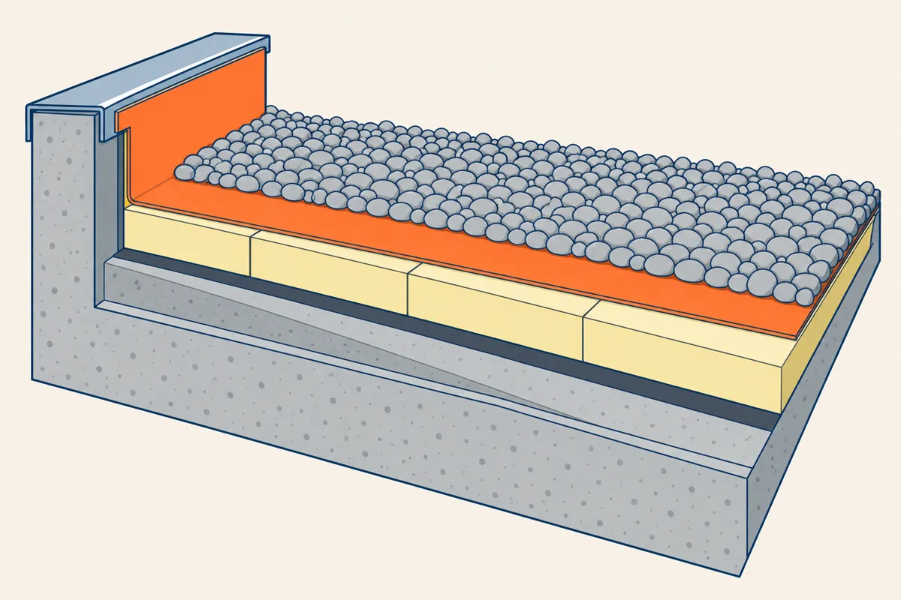

⬅ La ligne Lire les plans · Étanchéité des toitures

Le plan de toiture de Toiture 1 montre le toit vu de dessus. La coupe le montre tranché, comme les coupes verticales de la gare 4. On y voit la pile des couches posées sur la dalle : le complexe d'étanchéité.
Environ 2 heures, test compris. À la fin, vous saurez :
Comment travailler. Lisez les écrans 2 à 7 : chaque geste a sa méthode et un exemple résolu sur la coupe A-A du toit d'un local technique. Faites ensuite l'exercice sur la coupe B-B du vestiaire : chaque question dit l'écran à relire. La leçon existe aussi sur papier, avec les mêmes numéros d'écran (bouton « Leçon (PDF) » en haut de la gare).
Lisez une coupe dans cet ordre :
Sur les coupes de toiture, la membrane est souvent un trait épais. Le pare-vapeur est souvent un trait fin interrompu. L'acrotère est le muret qui borde le toit ; son dessus s'appelle l'arase.
Le titre dit COUPE A-A, à l'échelle 1/10.
Le dessus de la dalle est à + 6,20, son dessous à + 6,00. La dalle mesure 6,20 − 6,00 = 0,20 m, soit 200 mm.
Le trait épais orange est posé sur l'isolant et remonte sur l'acrotère jusqu'à + 6,70 : c'est la membrane et son relevé. Une bande de métal, la bande de solin, couvre la tête du relevé.
Le porteur peut aussi être en bacs d'acier ou en bois. La coupe vous le montre avant que vous montiez sur le toit, et le complexe change avec lui.
Protection, étanchéité, isolant, pare-vapeur, forme de pente, porteur. Récitez la pile dans les deux sens. Ici, la protection est le gravillon, l'étanchéité est la membrane et le porteur est la dalle en béton.
Pour nommer une couche sur une coupe sans légende écrite, regardez sa place et son dessin.
| Couche | Comment la reconnaître |
|---|---|
| Protection (gravillon) | la couche du dessus, mince, posée sur la membrane |
| Membrane | le trait épais, qui remonte sur l'acrotère |
| Isolant | la couche épaisse, juste sous la membrane |
| Pare-vapeur | le trait fin interrompu, sous l'isolant |
| Forme de pente | la couche posée sur la dalle, plus épaisse au point haut qu'au point bas |
| Porteur (dalle en béton) | en bas, la dalle, qui continue dans l'acrotère |
La couche dessinée en trait fin interrompu, sous l'isolant, est le pare-vapeur.
La couche posée sur la dalle, sous le pare-vapeur, est la forme de pente.
| Couche | Son travail |
|---|---|
| Protection (gravillon, dalles) | protéger la membrane du soleil et des chocs |
| Revêtement d'étanchéité (membrane) | arrêter l'eau : c'est la raison d'être de l'ouvrage |
| Isolant | freiner le passage du froid et du chaud |
| Pare-vapeur | arrêter la vapeur d'eau qui monte du bâtiment, sinon elle peut se condenser dans l'isolant et le mouiller |
| Forme de pente | donner la pente qui mène l'eau aux EP, les évacuations des eaux pluviales (Toiture 1) |
| Élément porteur | porter toutes les couches : dalle en béton, bacs en acier ou bois |
Pour trouver la couche qui fait un travail, lisez le verbe de la phrase : protéger, arrêter l'eau, freiner le froid et le chaud, arrêter la vapeur, mener l'eau, porter. Cherchez ce verbe dans la colonne « Son travail », puis lisez la couche sur la même ligne.
« Elle porte toutes les couches » : le verbe est porter. C'est le porteur, ici la dalle en béton.
« Il freine le passage du froid et du chaud » : le verbe est freiner. C'est l'isolant.
La coupe donne des niveaux, le descriptif donne l'épaisseur de chaque couche. La méthode :
Le pare-vapeur et la membrane ont une épaisseur négligée : n'ajoutez rien pour eux. L'épaisseur de la forme de pente change avec l'endroit. Prenez celle du point où passe la coupe.
Descriptif du local technique : forme de pente 150 mm au point haut, isolant 120 mm, gravillon 40 mm.
| Niveau cherché | Calcul | Résultat |
|---|---|---|
| Dessus de la dalle | lu sur la coupe | + 6,20 |
| Dessus de la forme de pente | 6,20 + 0,15 | + 6,35 |
| Dessus de l'isolant | 6,35 + 0,12 | + 6,47 |
| Dessus de la protection | 6,47 + 0,04 | + 6,51 |
Le plan de toiture du local donne + 6,35 au point haut. Le calcul donne la même valeur : il s'accorde avec le plan.
Au bord du toit, la membrane remonte sur l'acrotère : c'est le relevé. Il doit dépasser la protection, pour que l'eau qui stagne ou rejaillit sur la protection ne passe pas par-dessus le relevé. La hauteur minimale est fixée par le DTU qui s'applique (document technique unifié, la règle de l'art écrite), le NF DTU 43.1 pour un toit en béton. Dans les exercices de cette ligne, elle est une donnée de l'exercice : 150 mm au-dessus de la protection.
Dessus de la protection : + 6,51. Niveau minimal du relevé : 6,51 + 0,15 = + 6,66.
Le relevé monte jusqu'à + 6,70 : 6,70 − 6,51 = 0,19 m, soit 190 mm. 190 mm est plus que 150 mm : le relevé est conforme.
Près de la naissance EP, l'entrée de l'évacuation des eaux pluviales, le plan de toiture donne le dessus de la forme de pente à + 6,24. Le relevé monte à + 6,52.
Dessus de la protection à cet endroit : 6,24 + 0,12 + 0,04 = + 6,40.
Hauteur du relevé : 6,52 − 6,40 = 0,12 m, soit 120 mm. 120 mm est moins que 150 mm : le relevé n'est pas conforme.
Au point bas, la forme de pente est plus mince, donc la protection est plus basse. Recalculez la protection à chaque endroit. Le détail complet du relevé, avec la protection de sa tête, est en Toiture 3.
La lecture d'une coupe de toiture suit toujours le même ordre. Gardez cet écran sous les yeux pendant l'exercice.
| Étape | Geste | Écran |
|---|---|---|
| 1 | Lire le titre, l'échelle, la légende et les niveaux | 2 |
| 2 | Nommer les couches par leur place et leur dessin | 3 |
| 3 | Dire le rôle de chaque couche | 4 |
| 4 | Calculer les niveaux : niveau + épaisseur en mètres | 5 |
| 5 | Relevé : protection + 0,15, puis comparer | 6 |
Écrivez chaque calcul en entier, avec son unité : 6,20 + 0,15 = 6,35 m. Avec le calcul écrit, vous retrouvez vous-même une erreur.
Répondez à toutes les questions, votre score s'affiche en bas.
Vous connaissez la pile : six couches, six rôles, et le calcul des niveaux qui va avec.
Télécharger la leçon papier (PDF) Télécharger l'exercice papier (PDF)
Pour l'enseignant, le corrigé est dans l'espace enseignant, sous code. L'exercice fait légender la coupe B-B du vestiaire, calculer ses niveaux et vérifier deux relevés.
Gare suivante : les points singuliers, Toiture 3.